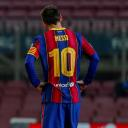
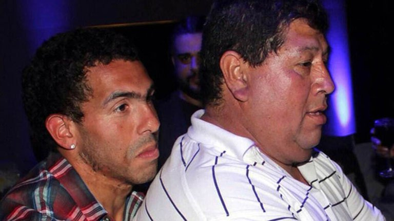
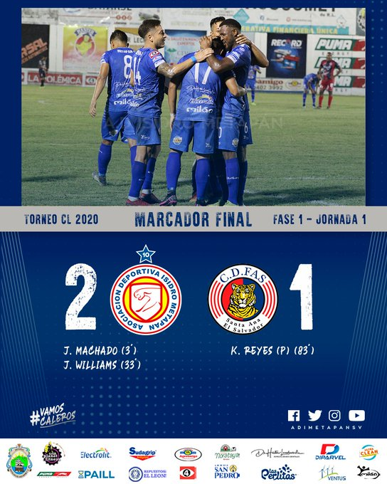
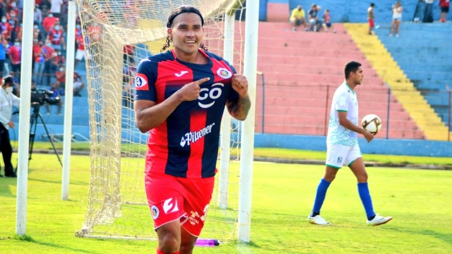

¿Mesi se va del Barcelona?

Luego de la goleada recibida a manos del PSG, el Barcelona vuelve a atravesar otra crisis deportiva.
La remontada en París parece utópica y como si fuese poco, apareció Rivaldo y soltó una bomba,
que todavía retumba en la ciudad española: Messi se va del Barcelona.
Murió Don Segundo, el padre de Carlos Tevez

Este domingo se confirmó la noticia de la muerte de Don Segundo, el padre de Carlos
Tevez, quien estaba atravesando una dura enfermedad y según había contado el
propio futbolista en enero de este año sus probabilidades de sobrevivir eran prácticamente nulas.


FAS cae ante 11 Deportivo
Carlos Peña tuvo el pasado sábado su debut oficial con el Deportivo FAS de Salvador,
equipo al que arribó luego de no encontrar acomodo en México. Durante su primer partido
en la Jornada 1 del torneo Clausura 2021 de la liga local, 'Los Tigrillos' cayeron 2-1
ante el Isidro Metapán, en lo que fue el derbi santaneco disputado en el estadio Jorge Calero Suárez.
El centrocampista mexicano arrancó como titular en el encuentro del cual disputó 64 minutos
hasta que fue sustituido por Alberto Henríquez por decisión del técnico, Jorge 'Zarco'
Rodríguez.